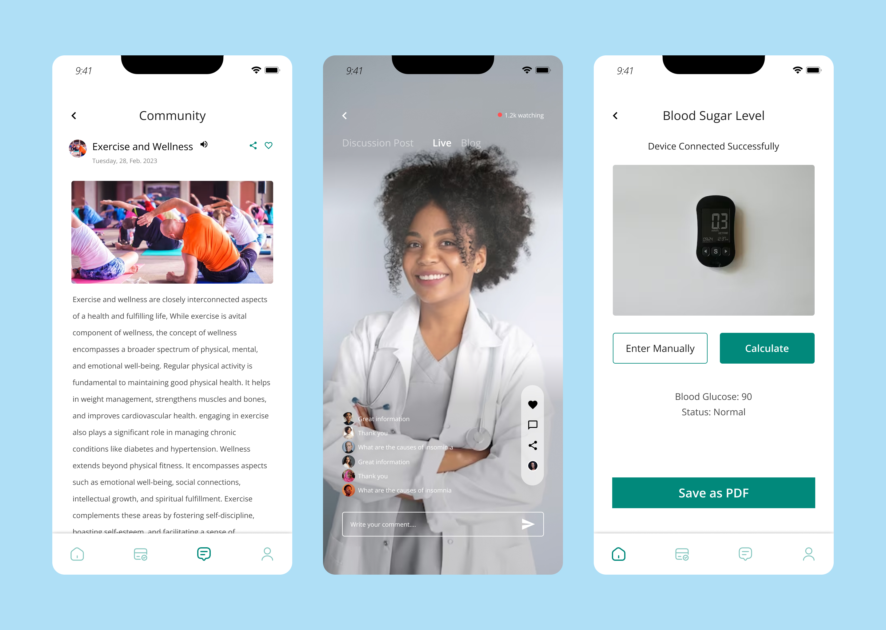

Tedious Data Entry
Typing blood sugar readings, meal context, and insulin doses across multiple screens caused users to skip daily logs.
HealthTech · Mobile Patient Companion
Product Designer
2025
Managing diabetes requires consistent daily habits, from logging blood glucose readings to taking insulin and oral medications on time. Many health apps overwhelm patients with clinical charts and lengthy forms. I designed DiabeCare to make daily tracking calm, accessible, and fast enough to complete in under ten seconds.

Patients managing blood sugar levels often deal with visual fatigue and daily stress. The interface needed to feel supportive and effortless rather than clinical and intimidating.
Typing blood sugar readings, meal context, and insulin doses across multiple screens caused users to skip daily logs.
Older patients and users with vision sensitivity struggled to interpret tiny numbers and low-contrast medical graphs.
Standard phone alarms lacked context on dosage instructions and whether a dose had already been recorded.
I prioritized large touch targets, plain-language health insights, and a streamlined logging flow that lets patients record a reading in three quick taps.
Display the latest glucose reading, target range indicator, and next scheduled medication right at the top of the home screen.
Replace typing with one-tap pills for meal states like Fasting, Before Meal, and After Meal to speed up daily entries.
Use generous font sizes, high-contrast color coding, and simple weekly trend summaries that patients can easily share with their doctors.
A look at the core mobile journeys covering daily glucose entry, smart medication checklists, and weekly health trend summaries.


Design Outcome
The DiabeCare concept transforms a stressful daily medical routine into a clear, reassuring mobile experience. By combining accessible typography with frictionless logging and smart reminders, the design helps patients stay consistent with their care plan.

Experiments in automated 3D asset pipelines, hybrid AI tools, and interactive code.
Preview Lab
One search experience for reviewing complex taxpayer records.
View Case Study